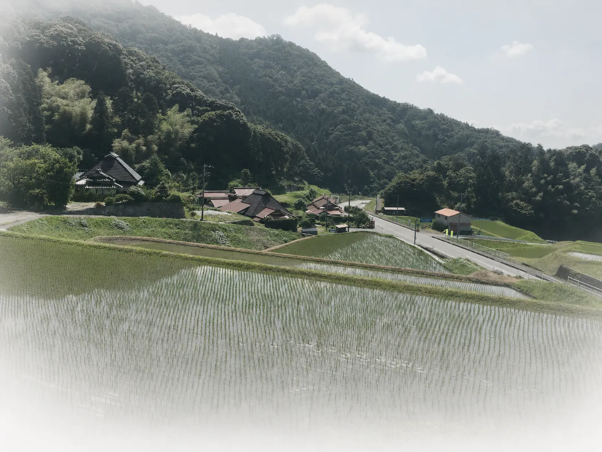

山を国に引き取ってもらえると聞いた
相続した土地を国に引き渡す「相続土地国庫帰属制度」があります。法務局への申請と審査があり、手数料や負担金がかかります。境界が明らかでない土地や、管理に過大な費用がかかる土地などは承認されないことがあるため、山林では事前の確認が大切です。
私たちにできること境界や現況を整理し、申請を検討できる状態かを一緒に確認します。手続きは法務局や専門家へおつなぎします。関連するサービス →
 ネイチャーキャピタル・リアルエステイトNature Capital Real Estate
ネイチャーキャピタル・リアルエステイトNature Capital Real Estate

山林をお持ちの方へ
売却、遠方からの管理、相続、手放し方、費用、境界。今困っていることから、山林・里山の現状と選択肢を整理します。
よくあるご相談
お悩み別のご相談
当てはまるものから読んでください。どれにも当てはまらなくても、ご相談いただけます。
相続した土地を国に引き渡す「相続土地国庫帰属制度」があります。法務局への申請と審査があり、手数料や負担金がかかります。境界が明らかでない土地や、管理に過大な費用がかかる土地などは承認されないことがあるため、山林では事前の確認が大切です。
私たちにできること境界や現況を整理し、申請を検討できる状態かを一緒に確認します。手続きは法務局や専門家へおつなぎします。関連するサービス →
相続放棄は家庭裁判所での手続きで、原則として相続の開始を知った時から3か月以内に行います。山だけでなく、預貯金や自宅を含むすべての財産を相続しないことになります。
私たちにできること山林の状況と選択肢を整理し、判断に必要な材料をそろえます。法的な判断は司法書士・弁護士などの専門家へおつなぎします。関連するサービス →
隣接地の所有者、地域の林業事業者、山林を活用したい企業や個人など、引き受け手が見つかる可能性は土地の条件によって大きく変わります。自治体が寄付を受け入れる場合は限られています。
私たちにできること場所、接道、森林の状態などの条件を整理し、現実的な引き受け手を検討します。関連するサービス →
山林は評価額が低いため、固定資産税が少額だったり、免税点未満で課税されていなかったりする場合もあります。まずは納税通知書や名寄帳で、どの土地にいくらかかっているかを確認することが出発点です。
私たちにできること名寄帳や登記資料をもとに、所有している土地と負担を一覧にして整理します。関連するサービス →
費用は、面積、樹種、道からの距離、作業の内容によって大きく変わります。森林経営計画にもとづく間伐などでは、補助金を活用できる場合もあります。
私たちにできること地域の森林組合・林業事業体と、見積もりの前提となる情報を整理します。関連するサービス →
登記簿、公図、森林簿、森林計画図、市町村の林地台帳などが手がかりになります。図面と現地が一致しないことも多く、境界の確認には隣接する所有者の立会いが必要になる場合があります。
私たちにできること手元の資料と公的な資料を照らし合わせ、分かる範囲から場所を特定します。現地確認が必要な場合は、対応可否と費用を事前にご案内します。関連するサービス →
相続が重なると共有者が増え、売却や伐採などに共有者の同意が必要になります。所在が分からない共有者がいる場合に使える制度もあります。
私たちにできること共有者と持分を一覧にし、話し合いの前提を整理します。手続きが必要な場合は専門家へおつなぎします。関連するサービス →
放置すると、事故や被害が起きたときに所有者として責任を問われる可能性があります。まずは現地の状況を確認することが大切です。
私たちにできること現地の状況確認と写真での報告、必要な場合は地域の事業者との伐採・手入れの調整を検討します。関連するサービス →
※ 制度の内容や要件は変わることがあります。個別の法律・税務の判断は、司法書士・弁護士・税理士などの専門家にご確認ください。
サービス
山林所有者向けの「さとやま不動産」と、森林組合・林業事業体の計画づくり。それぞれの状況に合わせたサービスをご案内します。
サービスを見る →お問い合わせ
初回インタビューで、分かっていることと、確認したいことを一緒に整理します。
無料相談を申し込む